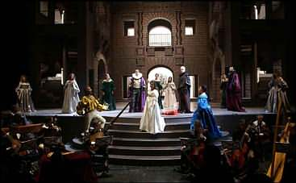

Revista mensual de publicación en Internet
Número 88º - Junio-Septiembre
2.008

|
|
|
En cualquier tiempo pasado… Por Víctor Pliego de Andrés. Lee su curriculum.  L’Orfeo. Música de Claudio Monteverdi. Libreto de Alessandro Striggio. Reparto: Dietrich Henschel, Maria Grazia Schiavo, Sonia Prina, Luigi De Donato, Antonio Abete, Agustín Prunell-Friend, Hanna Bayodi-Hirt, Xavier Sabata, Cyril Auvity, Juan Sancho, Jonathan Ells, Ludovic Provost. Director musical: William Christie. Director de escena, escenógrafo, figurinista e iluminador: Pier Luigi Pizzi. Coreógrafo: Gheorghe Iancu. Coro y Orquesta de Les Arts Florissants con la participación de Les Sacqueboutiers. Producción del Teatro Real de Madrid y del Teatro de La Fenice de Venecia. Teatro Real de Madrid, del 13 al 28 de mayo de 2008. Pizzi es un genio de la ópera que siempre triunfa en Madrid, donde es muy querido por el público. El Teatro Real le ha encargado la segunda producción del Orfeo de Monteverdi que se presenta en este escenario con pocos años de diferencia tras la de Savall y Deflo (1999). El resultado ha gustado, pero no tanto como otras viejas y fastuosas producciones con las que Pizza siempre ha maravillado. El comienzo es verdaderamente impactante: precedido de un redoble y luego de la célebre fanfarria de los Gonzaga, todo un palacio surge desde las entrañas del teatro a la luz de unas antorchas. Pero el montaje culmina con un baile discotequero un tanto deslavazado, con el que se cierra el recorrido que nos conduce desde los tiempos pasados hasta el presente, desde el Paraíso perdido hasta el Infierno del mundo presente: ¿Fue cualquier tiempo pasado mejor? ¿Hemos de añorar la sofisticación de las viejas cortes ducales del Renacimiento? La función se divide en dos partes bien distintas. La primera evoca la época de Monteverdi y muestra la representación ante los nobles invitados en el patio del palacio, haciendo del público actual testigo de aquellos testigos. La segunda parte nos lleva a un infierno crepuscular, situado, según parece señalar el vestuario de trajes negros, en tiempos actuales o cercanos. El contraste resulta algo decepcionante y el final, aunque comprensible, resulta demasiado prosaico. Se pierde la magia que la aparición inicial había convocado. El propio texto incita, en gran medida, este triste y decepcionante final. Las coreografías no ayudan mucho. Con todo, la puesta en escena es sugestiva y también muy arriesgada, pues los cantantes y músicos se reparten por el proscenio, por la arquitectura del patio y por las galerías y aposentos que lo rodean a distintas alturas. Hay reminiscencias de los corrales de comedias en este suntuoso patio. Los músicos y cantores se conjuntan de maravilla, salvando las comprometedoras y enormes distancias. Los solistas que dirige William Christie son verdaderamente sensacionales: tanto la orquesta de Les Arts Florissants como el coro, fantástico, de sacabuches (Les Sacqueboutiers). Son pocos los tañedores, pero muy escogidos. Colmaron con su talento y con sus ecos la gran sala del Teatro Real, concebida siglos después de esta música y para instrumentos más modernos, abundantes y sonoros. Al frente de la orquestilla estuvo el maestro Christie, tocando en ocasiones algunos teclados, y en el primer atril Hiro Kurosaki, un extraordinario violinista barroco que desde hace unos años comparte sus compromisos artísticos internacional con la enseñanza en el Real Conservatorio Superior de Música de Madrid, un detalle notable que pocos conocen fuera de los círculos especializados. El elenco estuvo encabezado por Dietrich Henschel, que cautivó al público por su gracia y su arte, haciéndose perdonar las faltas que tuvo. No es este su estilo más adecuado, pero se trata de un artista seductor y atrevido como pocos. Maria Grazia Schiavo interpretó sucesivamente tres papeles distintos con igual poderío, y parecida capacidad de fascinación: Euridice, Proserpina, La Música. También asombró Agustín Prunell-Firend en su espectacular aparición final como Apolo. Está producción es una oportuna prolongación de las celebraciones monteverdianas del pasado año. Es un teatro comprometido e inteligente, que además de causar deleite, mueve a la reflexión. Docere, movere et delectare. (Las Artes Florecientes del maestro Christie aprovecharon su estancia en la capital para ofrecer unos maravillosos conciertos gratuitos en distintas catedrales madrileñas). Fotografía: Javier del Real
|